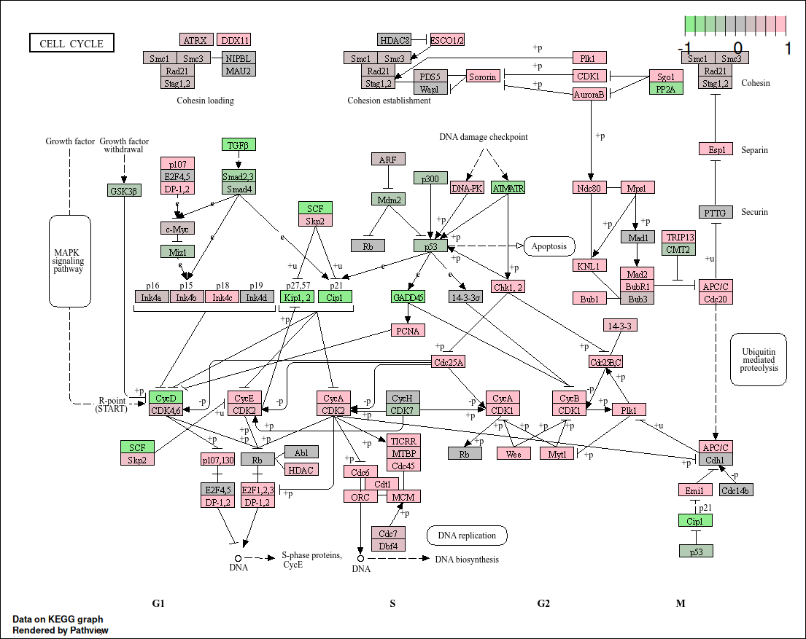

Pathview for KEGG
Cordeliers Artificial Intelligence and Bioinformatics
2025-05-09
Source:vignettes/pathview.Rmd
pathview.Rmd
## Loading required package: S4Vectors## Loading required package: stats4## Loading required package: BiocGenerics## Loading required package: generics##
## Attaching package: 'generics'## The following objects are masked from 'package:base':
##
## as.difftime, as.factor, as.ordered, intersect, is.element, setdiff,
## setequal, union##
## Attaching package: 'BiocGenerics'## The following objects are masked from 'package:stats':
##
## IQR, mad, sd, var, xtabs## The following objects are masked from 'package:base':
##
## anyDuplicated, aperm, append, as.data.frame, basename, cbind,
## colnames, dirname, do.call, duplicated, eval, evalq, Filter, Find,
## get, grep, grepl, is.unsorted, lapply, Map, mapply, match, mget,
## order, paste, pmax, pmax.int, pmin, pmin.int, Position, rank,
## rbind, Reduce, rownames, sapply, saveRDS, table, tapply, unique,
## unsplit, which.max, which.min##
## Attaching package: 'S4Vectors'## The following object is masked from 'package:utils':
##
## findMatches## The following objects are masked from 'package:base':
##
## expand.grid, I, unname## Loading required package: IRanges## Loading required package: GenomicRanges## Loading required package: GenomeInfoDb## Loading required package: SummarizedExperiment## Loading required package: MatrixGenerics## Loading required package: matrixStats##
## Attaching package: 'MatrixGenerics'## The following objects are masked from 'package:matrixStats':
##
## colAlls, colAnyNAs, colAnys, colAvgsPerRowSet, colCollapse,
## colCounts, colCummaxs, colCummins, colCumprods, colCumsums,
## colDiffs, colIQRDiffs, colIQRs, colLogSumExps, colMadDiffs,
## colMads, colMaxs, colMeans2, colMedians, colMins, colOrderStats,
## colProds, colQuantiles, colRanges, colRanks, colSdDiffs, colSds,
## colSums2, colTabulates, colVarDiffs, colVars, colWeightedMads,
## colWeightedMeans, colWeightedMedians, colWeightedSds,
## colWeightedVars, rowAlls, rowAnyNAs, rowAnys, rowAvgsPerColSet,
## rowCollapse, rowCounts, rowCummaxs, rowCummins, rowCumprods,
## rowCumsums, rowDiffs, rowIQRDiffs, rowIQRs, rowLogSumExps,
## rowMadDiffs, rowMads, rowMaxs, rowMeans2, rowMedians, rowMins,
## rowOrderStats, rowProds, rowQuantiles, rowRanges, rowRanks,
## rowSdDiffs, rowSds, rowSums2, rowTabulates, rowVarDiffs, rowVars,
## rowWeightedMads, rowWeightedMeans, rowWeightedMedians,
## rowWeightedSds, rowWeightedVars## Loading required package: Biobase## Welcome to Bioconductor
##
## Vignettes contain introductory material; view with
## 'browseVignettes()'. To cite Bioconductor, see
## 'citation("Biobase")', and for packages 'citation("pkgname")'.##
## Attaching package: 'Biobase'## The following object is masked from 'package:MatrixGenerics':
##
## rowMedians## The following objects are masked from 'package:matrixStats':
##
## anyMissing, rowMedians## ## ##############################################################################
## Pathview is an open source software package distributed under GNU General
## Public License version 3 (GPLv3). Details of GPLv3 is available at
## http://www.gnu.org/licenses/gpl-3.0.html. Particullary, users are required to
## formally cite the original Pathview paper (not just mention it) in publications
## or products. For details, do citation("pathview") within R.
##
## The pathview downloads and uses KEGG data. Non-academic uses may require a KEGG
## license agreement (details at http://www.kegg.jp/kegg/legal.html).
## ##############################################################################
library(org.Hs.eg.db)## Loading required package: AnnotationDbi
library(knitr)
data("gse")
macrophage <- gse; rm(gse)
macrophage <- macrophage[,macrophage$condition %in% c("naive", "IFNg")]
rownames(macrophage) <- sub("\\..*$", "", rowData(macrophage)$gene_id)
rowData(macrophage)$gene_id <- sub("\\..*$", "", rowData(macrophage)$gene_id)
# S'assurer que la variable condition_name est bien un facteur
macrophage$condition_name <- factor(macrophage$condition_name)
# Créer l'objet DESeq2 et exécuter l'analyse
dds <- DESeqDataSet(macrophage, design = ~ condition_name)## using counts and average transcript lengths from tximeta
dds <- DESeq(dds)## estimating size factors## using 'avgTxLength' from assays(dds), correcting for library size## estimating dispersions## gene-wise dispersion estimates## mean-dispersion relationship## final dispersion estimates## fitting model and testing
# Obtenir les résultats différentiels
res <- results(dds)
# Vérifier les identifiants de gènes (par défaut ce sont des Ensembl IDs)
head(rownames(res)) # par exemple ENSG00000000003## [1] "ENSG00000000003" "ENSG00000000005" "ENSG00000000419" "ENSG00000000457"
## [5] "ENSG00000000460" "ENSG00000000938"
# Mapper les Ensembl IDs vers Entrez IDs
ens_ids <- rownames(res)
entrez_ids <- mapIds(org.Hs.eg.db, keys = ens_ids,
column = "ENTREZID", keytype = "ENSEMBL", multiVals = "first")## 'select()' returned 1:many mapping between keys and columns
# Ajouter les Entrez IDs à l'objet res
res$entrez <- entrez_ids
# Supprimer les NA (pour garder uniquement les gènes ayant un Entrez ID)
res_clean <- res[!is.na(res$entrez), ]
# Créer un vecteur nommé de log2FoldChange avec les identifiants Entrez
gene_data <- res_clean$log2FoldChange
names(gene_data) <- res_clean$entrez
# Visualiser sur une voie KEGG, par exemple hsa04110 (voie d'apoptose)
# Vous pouvez changer le pathway.id selon le pathway que vous voulez visualiser
pathview(
gene.data = gene_data, # Données de log2FoldChange pour les gènes DE
pathway.id = "hsa04110", # ID de la voie KEGG (par ex. hsa04110 pour l'apoptose)
species = "hsa", # Espèce (ici Homo sapiens)
gene.idtype = "entrez", # Utiliser les identifiants Entrez
out.suffix = "macrophage_apoptosis", # Suffixe pour les fichiers de sortie
low = "lightgreen", # Couleur pour les valeurs faibles (logFC négatif)
high = "pink", # Couleur pour les valeurs élevées (logFC positif)
na.color = "gray",
kegg.native = TRUE
)## 'select()' returned 1:1 mapping between keys and columns## Info: Working in directory /home/marie-christian/Desktop/CAIBIrnaseq/vignettes## Info: Writing image file hsa04110.macrophage_apoptosis.png
# Afficher le graphique dans le document
include_graphics("hsa04110.macrophage_apoptosis.png")